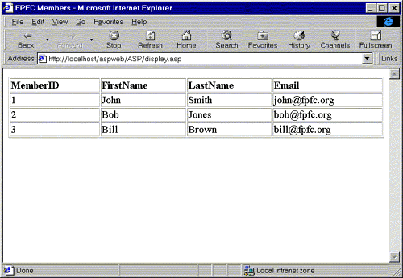
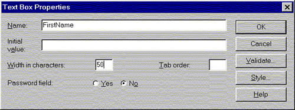
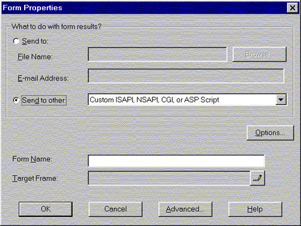
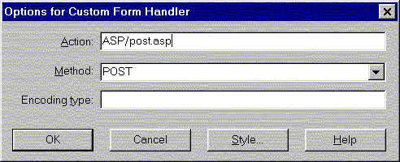
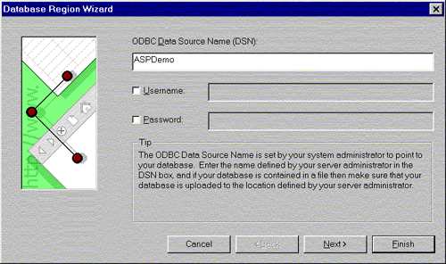
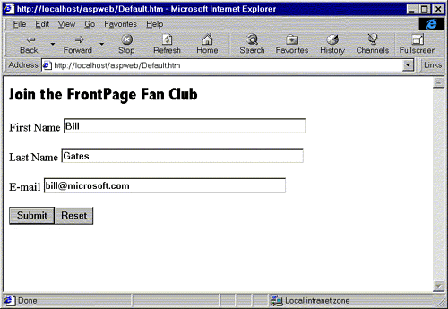
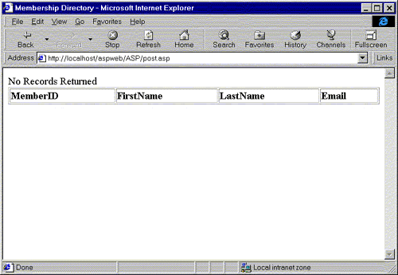
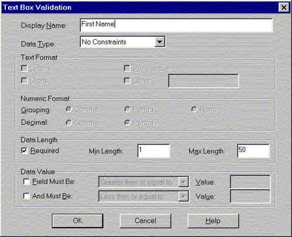
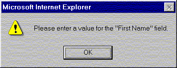

|
| ||
|
| ||
Brought to you by Inside Microsoft FrontPage, a ZD
Journals publication. Click here for a Preview issue  .
.
In a previous article, "Using Active Server Pages to Display Access Data," we showed you how to dynamically display data in FrontPage. We created a Web page that displayed the current contents of a database each time it was viewed.
This month, we'll build on that technique by showing you how to use FrontPage to post information to the same database. Taken together, these techniques can allow people who view your Web site pages to both read from and write to Access databases.
Posting data from a Web page is actually pretty easy to do -- as long as you've completed several preliminary steps first, including installing required components, creating the database and importing into the FrontPage-based Web site, and creating a system Data Source Name (DSN). We discussed these steps in detail last month and will assume that you've completed them.
Once the preliminary steps are out of the way, you'll need to start a new page in FrontPage Editor and build a simple form. Each field on this form will match a field in the database. The Submit button, instead of saving the data to a text field, will send it to an ASP page.
Next, you'll need to create the ASP page, post.asp. This page will only have one job: inserting the data from the form into the Access database.
Finally, you can customize post.asp, as we'll see later. Now, let's get started with the procedure.
Launch FrontPage Explorer and open ASPWeb, the Web we created last month. Now, double-click Default.htm to open it in FrontPage Editor.
The page should appear blank, since all the work we did last month was on display.asp, which is shown in Figure A. We'll add a form to this page to let users post data.

Figure A. Last month, we created this Web page to display data from the FrontPage Fan Club database
First, type Join the FrontPage Fan Club on the first line of the page. Decorate this text as you like, and then press [Enter].
To start the form, choose Insert | Form Field | One-Line Text Box. Doing so will create a form that includes a text box and Submit and Cancel buttons. Move the buttons down a line by clicking to the right of the text box and pressing [Enter].
Right-click on the text box and choose Form Field Properties... to open the dialog box shown in Figure B. In the Name text box, type FirstName. In the Width In Characters text box, type 50 and then click OK.

Figure B. Name your text box in this dialog box
Now, click to the left of the text box and type First Name. Highlight both this text and the text box and choose Insert | Form Field | Label. (This will make the label clickable, which means clicking on it will put the insertion point in the text box.)
We'll create the second text box the same way. Click to the right of the First Name text box and press [Enter] to move to a new line. Insert another one-line text box, name it LastName, and label it Last Name.
Repeat the same procedure to add a third text box. Name it Email and label it E-mail.
Notice that we're not creating a MemberID field, although the Access database includes one. Since MemberID is an AutoNumber field, Access will automatically assign a member ID to any new records you create.
By default, FrontPage sends form data to the file form_results.txt in the Web's _private directory. We need to change that setting so that the data goes to post.asp.
Right-click anywhere on the form and choose Form Properties... to open the dialog box shown in Figure C. Select the Send To Other option button and make sure Custom ISAPI, NSAPI, CGI, Or ASP Script is selected in the dropdown list. Then, click the Options... button to open the dialog box shown in Figure D. Type ASP/post.asp in the Action text box and click OK twice. (This instruction simply tells the form to send the data to post.asp, which is located in the ASP folder.) Save Default.htm now.

Figure C. In this dialog box, you specify that the form data should go to a custom ASP script

Figure D. In this dialog box, you specify where that ASP script is located
Next, we need to create form.asp -- the page that will actually send the data to the database. To do so, click the New button on the toolbar to start a blank page. Then, choose Insert | Database | Database Region Wizard... . The dialog box shown in Figure E will appear.

Figure E. Specify your database connection in the Database Region Wizard
In the ODBC Data Source Name (DSN) text box, type ASPDemo -- that's the name of the DSN we set up last month. Click Next to continue.
On the second page of the wizard, type the following SQL statement:
Insert into members (FirstName, LastName,
Email) values ('%%FirstName%%',
'%%LastName%%','%%Email%%')
In this statement, "members" is the table that holds your data in Access. The field names that appear in parentheses after the table name correspond to the fields in the database. The second set of field names -- '%%FirstName%%', for example -- refers to the fields in the form we created earlier. (Although you don't have to do so, we recommend using identical names for the database and form fields.)
Click Next to move to the last page of the wizard. Now, click Add Field to open the Add Field dialog box. In that dialog box, type MemberID and then click OK. Repeat this procedure to add the FirstName, LastName, and Email fields.
Click Finish to complete the wizard. Then, save your page as post.asp. Be sure to save it in the ASP folder.
Now, you can test your form. Switch back to Default.htm and click the Preview In Browser button. Type data for a new record, as shown in Figure F, and then click Submit. When you do, you'll see the page shown in Figure G. (We'll explain this page in the next section.) To confirm that your new record has been added, open the page display.asp in the ASP folder. You'll see the three records in the original database -- plus the record you just created.

Figure F. Your HTML form looks like any other

Figure G. When you submit the data, this page -- post.asp -- appears
The technique we've presented works, but it has two problems. First, as we mentioned, people who post data will see the rather cryptic page shown in Figure G. Second, the technique doesn't check for any errors in the data entered. For example, if someone leaves the Email field blank, the following message will appear:
Database Error: [Microsoft][ODBC Microsoft Access 97 Driver] Field 'Members.Email' can't be a zero-length string. One or more form fields were empty.
Let's look at solutions to these problems, beginning with the second. To make sure people enter valid data, we'll use FrontPage's form-field validation feature.
Open Default.htm in FrontPage Editor. Right-click on the FirstName field and choose Form Field Validation... from the pop-up menu to open the dialog box shown in Figure H.

Figure H. You can change the settings in this dialog box to make sure all fields are completed
In the Data Length section, enable the Required check box. Type 1 in the Min Length text box and 50 in the Max Length box -- that's the maximum length we specified in Access. Finally, click in the Display Name text box and type First Name. Click OK to close the dialog box.
Repeat this process with the other two fields. Save the page when you're done. Now, if someone tries to submit the form but leaves a field blank, a dialog box like the one shown in Figure I will appear. The form won't be submitted until all such problems have been corrected.
(In our sample database, we only used Access' Text data type. If you need to use other data types, like Number, you'll need to further validate the form field entries. For more information on validation, see the article "Validating Form Data in FrontPage" in the December 1997 issue.)

Figure I. This dialog box warns the user that a form field hasn't been entered correctly
To change the No Records Returned message, you'll need to make a change to the Database Region component in post.asp. We can't make the change in FrontPage Editor, however, because FrontPage will overwrite the change when we save the page.
Instead, make sure post.asp is closed in FrontPage Editor and then return to the Explorer. Right-click on post.asp in the file list (You may want to switch to the All Files view first). Choose Open With... from the pop-up menu and Text Editor (Notepad.exe) from the small dialog box that appears.
When Notepad launches, choose Edit | Find... and type No Records Returned. Click Find Next to find the first (and only) occurrence and then click Cancel. Replace the selected text with Your data has been stored. Save the document, making sure that you replace the existing copy. (You'll have to repeat this procedure anytime you open post.asp in FrontPage Editor.)
Once you've mastered the ability to read and write to databases in FrontPage, you can begin to create very sophisticated Web sites. In this article, we showed you the basics of connecting to Access databases.
Copyright © 1998, Ziff-Davis Inc. All rights reserved. ZD Journals and the ZD Journals logo are trademarks of Ziff-Davis Inc. Reproduction in whole or in part in any form or medium without express written permission of Ziff-Davis is prohibited.
Did you find this material useful? Gripes? Compliments? Suggestions for other articles? Write us!
© 1999 Microsoft Corporation. All rights reserved. Terms of use.